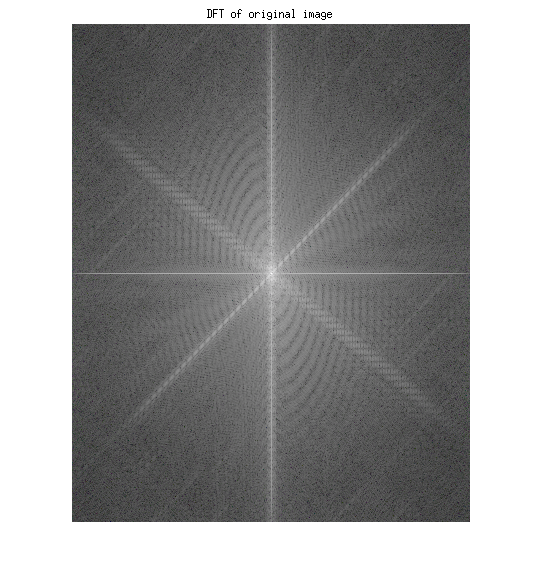
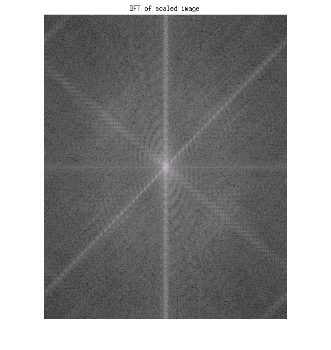

Yash Patel, 201301134
CSE, IIIT-H
Contents
1). Scaling the image.
Read the image.
im = imread('rupee-symbol.jpg'); % Compute DFT of original image. dft_original = fft2(im); dft_original = fftshift(dft_original); figure, imshow(mat2gray(abs(log(1 + dft_original)))), title('DFT of original image') %Scale the image, by multiplying by constant number. scaling_factor = 10; im_scaled = scaling_factor*im; dft_scaling = fft2(im_scaled); dft_scaling = fftshift(dft_scaling); figure, imshow(mat2gray(abs(log(1 + dft_scaling)))), title('DFT of scaled image') 
2). Scaling the argument
Trying out Down-Sampling first. %
resize_factor_1 = 0.5; im_resized_1 = double(imresize(im,resize_factor_1, 'method', 'box')); % Resized Image. figure, imshow(uint8(im_resized_1)), title('Down-sampled resized image'); dft_resize_1 = fft2(im_resized_1); dft_resize_1 = fftshift(dft_resize_1); figure, imshow(mat2gray(abs(log(1 + dft_resize_1)))), title('DFT of down filtered image') % Down sampling involves the loss the high-frequencies, since information is lost effects can be reflected in DFT. % % Trying out Up-sampling. % resize_factor_2 = 2; im_resized_2 = double(imresize(im, resize_factor_2, 'method', 'box')); figure, imshow(uint8(im_resized_2)), title('Up-sampled resized image') dft_resize_2 = fft2(im_resized_2); dft_resize_2 = fftshift(dft_resize_2); figure, imshow(mat2gray(abs(log(1 + dft_resize_2)))), title('DFT of UP sampled image') % In upsampling, we can recover the lost information by proer interpolation. %
3). Shifting the argument
shift_x = 50; shift_y = 50; im_shifted = circshift(double(im), [shift_x , shift_y]); dft_shift = fft2(im_shifted); dft_shift = fftshift(dft_shift); figure, imshow(mat2gray(abs(log(1 + dft_shift)))), title('DFT of shifted image') % This will not have any effect on the absolute values, but will change the phase with a term which is an exponential function of shift_x and shift_y.%
4). Refection about vertical line.
im_size = size(im); verticle_line = floor(im_size(2)/2); im_some = im; img_new(:,verticle_line+1:im_size(2),:)=im(:,im_size(2)-verticle_line:-1:1,:); dft_ver = fft2(img_new); dft_ver = fftshift(dft_ver); figure, imshow(mat2gray(abs(log(1 + dft_ver)))), title('DFT of reflection about verticle line.') % Since input is manuplated and changed now, DFT also changes.